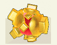
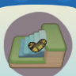
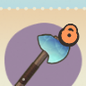
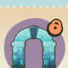
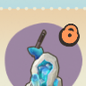
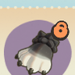

首页 / 热贝尔
热贝尔
我，热贝尔！来自宝石街的一个矿石小匠。
生日
2月9日
喜爱
轰炸大菇肉轰炸大菇肉轰炸大菇肉 流金石
好感
绿色、石制、青色、荤菜、冰箱
反感
素菜、古典、塑料
亲密度等级奖励
| 等级 | 类型 | 奖励 |
|---|---|---|
| 1 | 点头之交 | 交换联络方式：可在星湾查看友邻相关信息 |
| 2 | 点头之交 | 随心会面：可在星湾邀请友邻来访 |
| 3 | 同频友伴 | 邀请入住：可邀请友邻入住 |
| 4 | 同频友伴 | 好运猜石：可请热贝尔帮忙猜石 日常合影：可与友邻一起合影 |
| 5 | 同频友伴 | 推荐穿搭：可为友邻推荐服饰穿搭 |
| 6 | 心之牵绊 | 米友家装：可通过米友家装帮助友邻装修 |
| 7 | 心之牵绊 | 邀约同行：可邀约友邻同行陪伴 |
| 8 | 灵魂羁绊 | 专属称号：可获得友邻专属称号 |
历程
- 结伴而行：累计与热贝尔星海旅行3次
- 携手共进：累计与热贝尔星海旅行20次
- 同心协力：累计与热贝尔星海旅行50次
- 一见如故：累计主动与热贝尔闲聊10次
- 无话不谈：累计主动与热贝尔闲聊30次
- 相谈甚欢：累计主动与热贝尔闲聊50次
- 倾心而谈：累计主动与热贝尔闲聊100次
- 心有灵犀：累计主动与热贝尔闲聊150次
- 来自矿石：累计与热贝尔进行3次开石
- 来自大矿石：累计与热贝尔进行20次开石
- 来自野生大矿石：累计与热贝尔进行50次开石
- 乐于助人：累计完成热贝尔的友邻事件2次
- 无微不至：累计完成热贝尔的友邻事件20次
- 全心全意：累计完成热贝尔的友邻事件50次
- 略表心意：累计赠送热贝尔礼物2次
- 锦上添花：累计赠送热贝尔礼物20次
- 称心如意：累计赠送热贝尔礼物50次
友邻印象
普通季卡奖励
奇迹足迹*160
苍蓝萤石台阶*1奇迹足迹*240季卡选购奖励
季卡选购
辉晶锄斧*1季卡选购
苍蓝萤石拱门*1季卡选购
苍蓝石中斧摆件*1季卡选购
辉晶手套*1季卡选购第 9 格（季卡选购）
季卡选购交换日记
| 类型 | 标题 | 日记 |
|---|---|---|
| 纪念日 | 正式入住的第一天 | 在独立生活之后，这还是第一次，有个地方让我觉得不想再继续自由地迷路了。和你在同一个星球上的生活，我很期待！ 明天，也要一起吃好吃的！ |
| 温暖陪伴 | 宝贝们的古怪日常 | 我和我那些奇奇怪怪脾气的石头小宝贝们不得不说的故事。 |
| 温暖陪伴 | 萤石旷野小屋，嗷~完美的！ | 竟然真的造出来了，闪亮亮的萤石旷野小屋！ |
| 温暖陪伴 | 快乐的恐怖片之夜 | 听说无人敢看的恐怖片，那嗷呜一定得试一下！坚持住，热贝尔，看完它。 |
| 温暖陪伴 | 禁令与佳肴 | 谁说嗷呜必须得吃点蔬菜？谁说嗷呜禁止从屋顶跳下？一个都不听，次次都上当。 |
本页为《星布谷地》玩家图鉴资料页，内容整理自玩家资料站与游戏内数据，仅供参考；游戏版本更新后数据可能滞后。
站点由 GitHub Pages 静态托管 · 与游戏官方及 B 站 WIKI 无隶属关系 · 游戏素材版权归原权方所有。